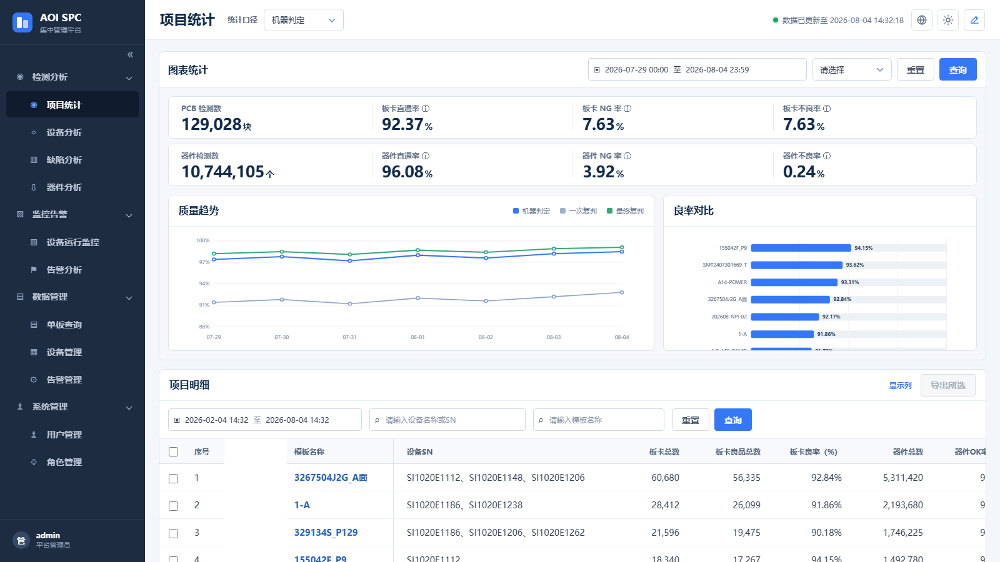
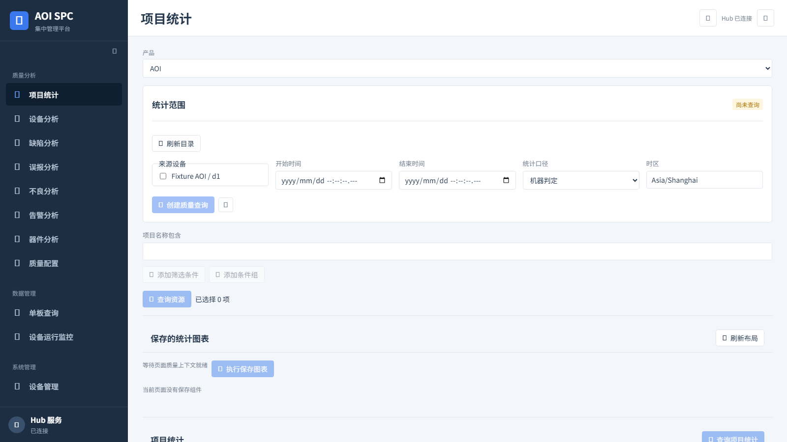
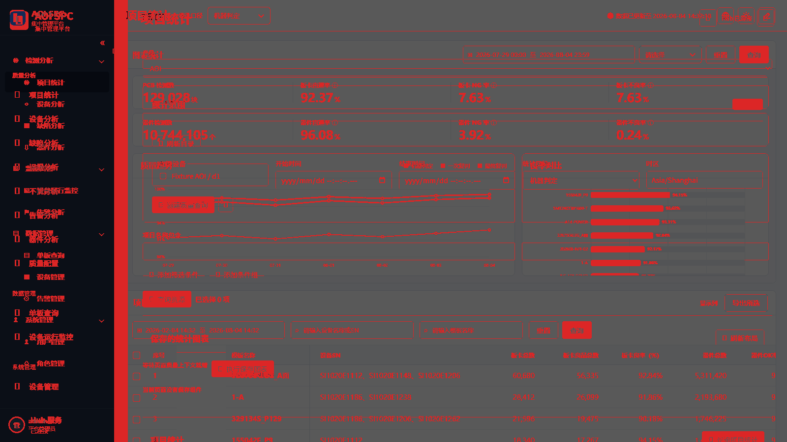
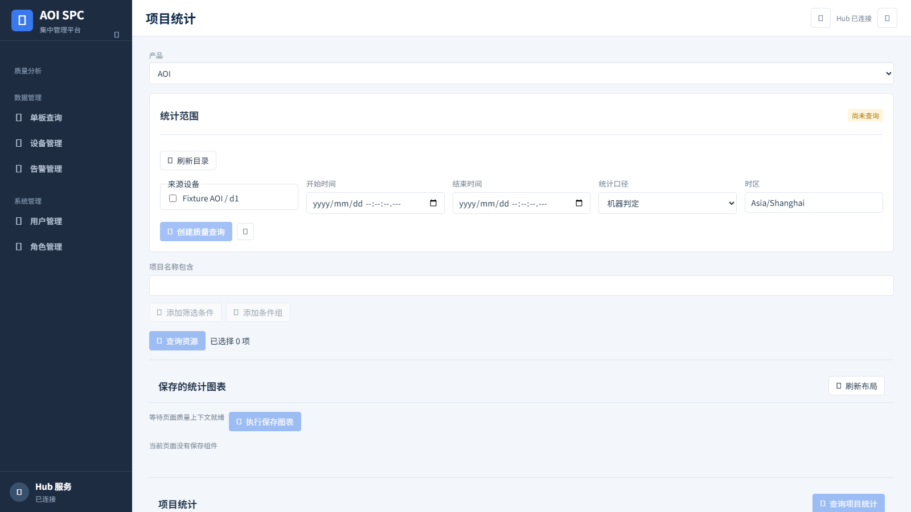
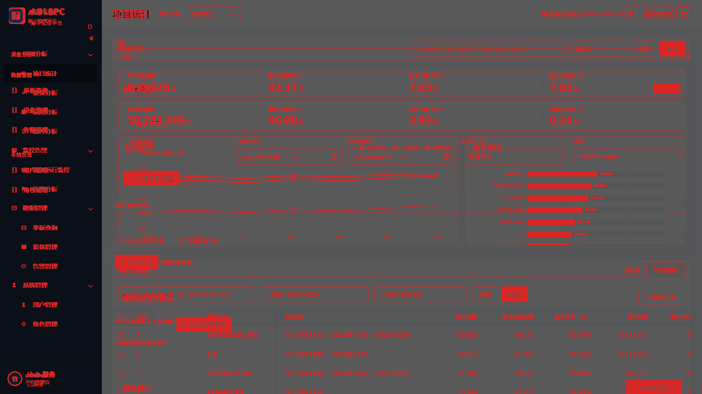
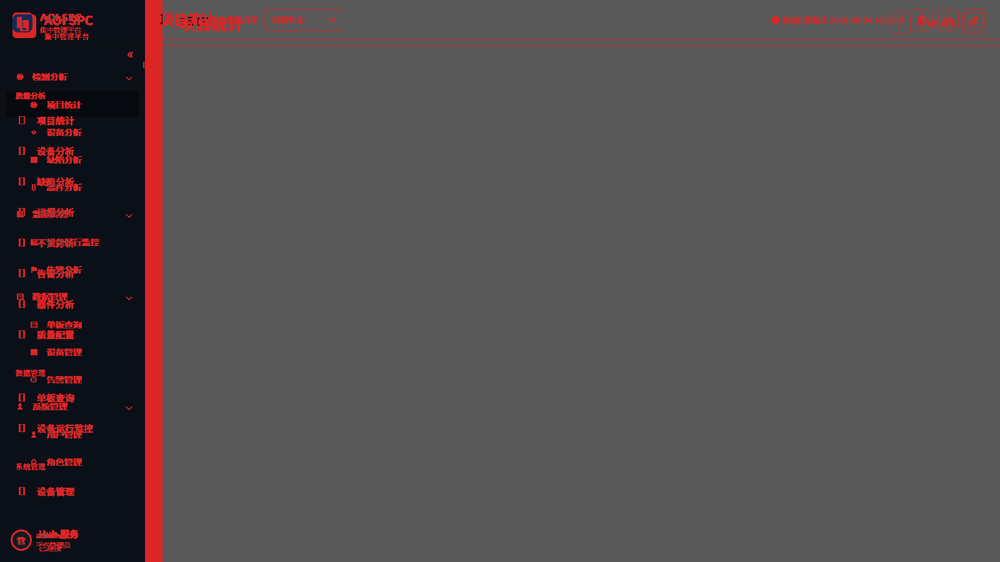
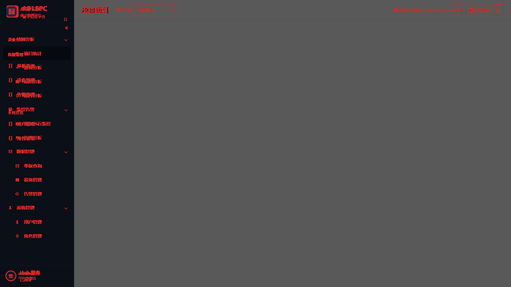

anubis hub 4363d816 · /projects · 对照 SPC 原型 01-项目统计首页 · 视口 1600×900
本轮只改 UI 外壳（布局 / 排版 / 颜色 / 导航信息架构），没有改业务数据。几何锚点从全部偏移变为 delta=0，样式差异清零；像素差显著下降，但外壳仍差 0.32 个百分点未达 1% 阈值，整页仍受“无真实后端、数据区为空”影响。
| 阶段 | case | 几何 | 样式差异 | 像素差 | mean delta | run |
|---|---|---|---|---|---|---|
| 对齐前 | projects（整页） | fail（3/3 偏移） | 13 | 10.59% | 18.50 | run1 |
| 对齐前 | shell（遮罩 main） | fail（3/3 偏移） | 13 | 3.69% | 6.36 | run2 |
| 对齐后 | shell（遮罩 main） | pass | 0 | 1.32% | 1.63 | run7 |
| 对齐后 | projects（整页） | pass | 0 | 8.39% | 13.89 | run8 |
阈值：maxMismatch 1%，maxRegionMismatch 40%，geometryTolerance 1px。shell case 用 masks: ['main'] 遮住数据区，只比较侧栏与顶栏。


4363d816（对齐前）
| 锚点 | 原型 rect | 实现 rect | delta |
|---|---|---|---|
| sidebar | 0,0 232×900 | 0,0 260×900 | w +28 |
| header | 232,0 1368×64 | 260,0 1340×74 | x +28 / w −28 / h +10 |
| title | 256,17.2 88×28.6 | 286,18 104×37 | x +30 / w +16 / h +8.4 |
| 元素 | 属性 | 原型 | 实现 |
|---|---|---|---|
| title | fontSize / color | 22px / #102A4C | 26px / #24374C |
| header | padding / gap / color | 24px / normal / #334155 | 26px / 14px / #24374C |
| sidebar | background / color / position | #1E2C42 / #B8C4D5 / static | #1D2D42 / #BFCBDB / fixed |




| 类别 | 位置 | 改动 |
|---|---|---|
| 布局 | 侧栏 | 260px → 232px，workspace margin 同步；≥761px 改为 flex + position: static |
| 布局 | 顶栏 | 74px → 64px，padding 26 → 24px，gap: normal |
| 排版 | 标题 | 26px → 22px，line-height 28.6px，颜色 #102A4C |
| 颜色 | 侧栏 / 顶栏 | 侧栏 #1E2C42 / #B8C4D5；顶栏文字 #334155 |
| 导航 | 品牌区 | 84px → 72px，padding 20px → 0 20px，gap 13 → 12 |
| 导航 | 导航项 | 46px/15px/500/gap15 → 42px/14px/550/gap11 |
| 信息架构 | 分组 | 4 组对齐原型：检测分析 / 监控告警 / 数据管理 / 系统管理；误报、不良、质量配置移出主导航（路由保留） |
改动位于临时 worktree C:\Users\shiyuan\AppData\Local\Temp\anubis-4363d816，未提交、未触碰 anubis 主仓库。
| 范围 | 数值 | 原因 |
|---|---|---|
| 外壳 | 1.32%（距阈值 0.32pp） | 图标字形（PrimeIcons vs 原型符号）、品牌 mark、底部用户块、分组标题间距 |
| 整页 | 8.39% | 没有真实 Hub 后端：实现页停在“尚未查询 / 等待质量 Session”，原型是完整图表与表格；该差异不是 CSS 对齐能补齐的 |
| 数据区 | — | 测试用 fixtures 只覆盖连接态，未模拟真实统计 Session 数据 |
C:\Users\shiyuan\AppData\Local\Temp\pp-anubis-4363\run1（前）、run7（外壳后）、run8（整页后）C:\Users\shiyuan\AppData\Local\Temp\pp-anubis-4363\parity.config.mjsC:\Users\shiyuan\AppData\Local\Temp\anubis-4363d816（detached 4363d81）node cli.mjs run --config parity.config.mjs --repo <dir> --deps <anubis> --baseline-mode ephemeral --case shellassets/。